Statistical models and confidence intervals
Sept. 14, 2020
Objectives
Describe the characteristics and use of normal and log-normal distributions.
Know the relationship between probability density and cumulative probability for a continuous variable, and calculate these quantities in R.
Compare data to a reference distribution with a quantile-quantile plot.
Interpret a confidence interval and calculate the confidence interval for the mean of a normal distribution.
Probability distributions
A distribution is a function that associates a probability with each possible value of a random variable.
Discrete distribution
When the variable is discrete, each value has a probability mass, the sum of which must be equal to 1. For example, if \(x\) is the number obtained by rolling a balanced six-sided die, the probability of \(x\) is 1/6 for each of the numbers from 1 to 6. Since the probability is the same for each value, this would be a uniform distribution.

Continuous distribution
When the variable is continuous, the number of possible values is infinite, so the probability of precisely obtaining a given value is zero. The distribution function therefore associates a density of probability with a given value.
For example, here is a uniform probability distribution between 0 and 6. The probability density is constant (1/6) in the interval and zero outside.
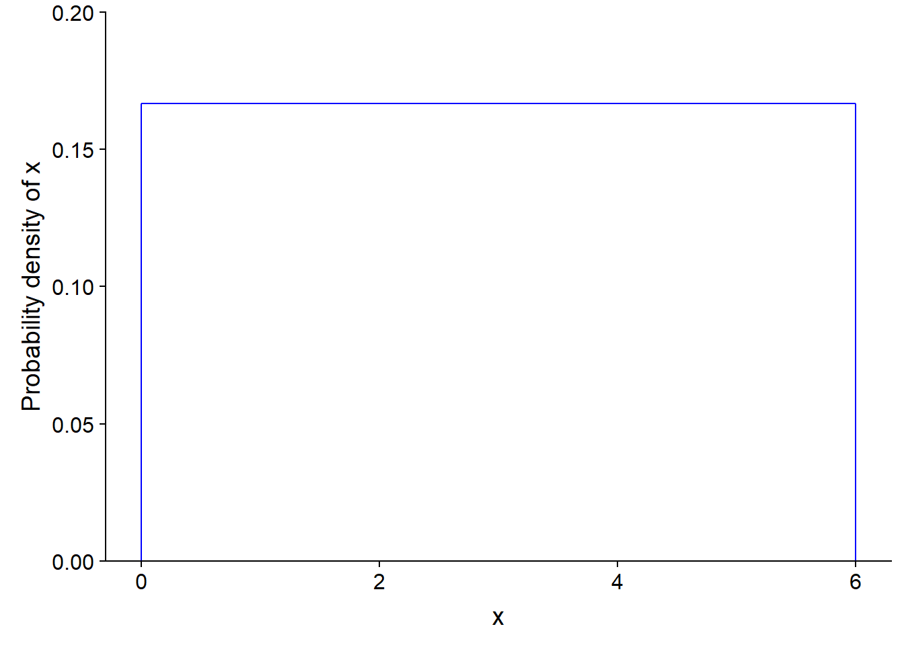
For a continuous distribution, the probability that the variable is within a given interval is the integral (the area under the curve) of the probability density in that interval.
Here, the probability density is rectangular, so it is easy to calculate the probability of an interval. For example, the probability of getting a value between 2.5 and 3 is 1/2 (width of the interval) x 1/6 (probability density) = 1/12 (~ 0.083). This value corresponds to the area of the filled rectangle in the graph below.
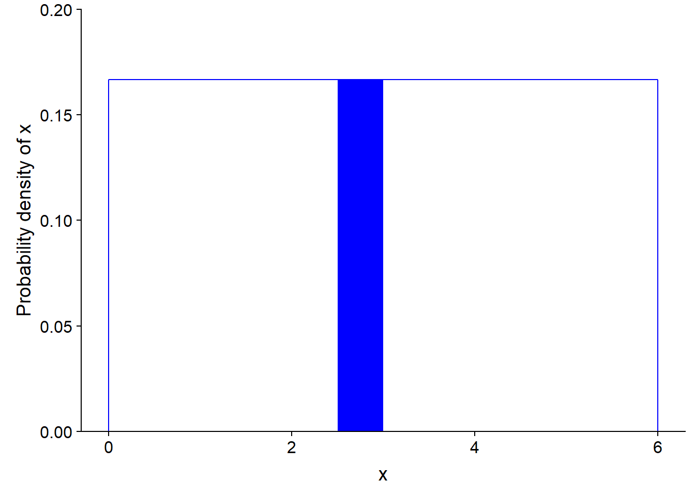
The integral of the probability density over all possible values of \(x\) (total probability) must be equal to 1.
Law of large numbers
In R, the following command generates ten random values (n = 10) drawn from the (continuous) uniform distribution between 0 and 6, which we saw in the preceding section.
x <- runif(n = 10, min = 0, max = 6)
round(x, 2) # round shows values with 2 decimals## [1] 5.02 5.02 3.36 5.26 4.66 4.25 3.09 0.92 5.38 0.42The histograms below show the distribution of values within samples with different \(n\). What do you notice?
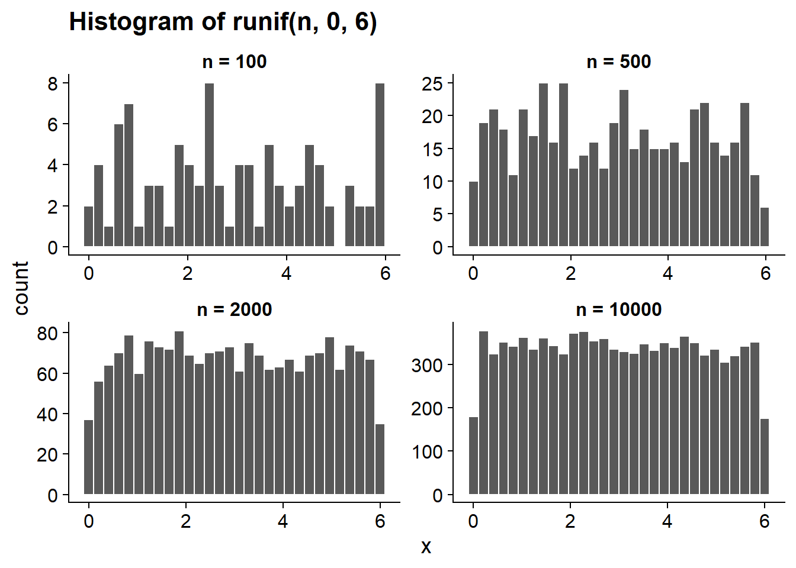
The runif function simulates sampling from a variable that follows a uniform distribution. The greater the size of that random sample, the more the distribution of values in the sample approaches the population distribution. This is what we call the law of large numbers.
The normal distribution
Motivation
In a complex system, the variables we observe result from the combined effect of many processes that we can not directly perceive. For example, the height of a person is influenced by a large number of genetic and environmental factors, the yield of a field depends on the weather for each day of the growing season as well as the micro-habitat perceived by each plant, etc. Modeling each of these processes is usually not possible. Fortunately, when many factors act independently on the same variable, their total effect tends to converge towards some well-known statistical distributions. We will see here a simple example of this phenomenon.
Suppose we are interested in a random variable that is itself the sum of \(n\) independent variables, and that each of these variables follows the uniform distribution between 0 and 6 presented above. Even if we do not know the distribution of this sum, the law of large numbers allows us to approximate it from simulations. So we create a function that generates \(n\) values of the uniform distribution and calculates their sum, then we generate 10,000 values of that sum (with replicate) for a given value of \(n\).
# Sum of n random variables with a uniform distribution between min and max
sum_unif <- function(n, min, max) {
sum(runif(n, min, max))
}
n <- 10
x <- replicate(10000, sum_unif(n, 0, 6))Here is a histogram of the values of the sum for different values of \(n\). What do you notice?
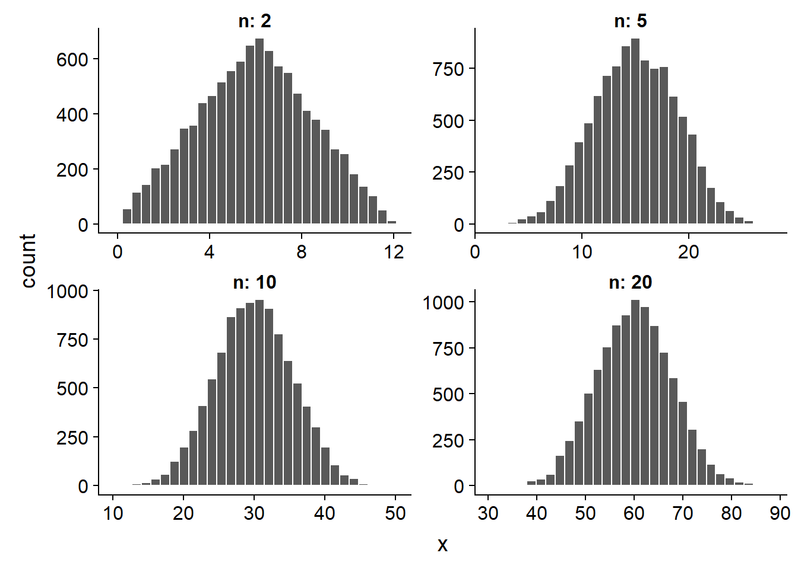
The sum of 2 values has a triangular distribution, but starting from \(n\) = 5, we see the bell shape of a normal distribution. This is a specific case of a more general statistical law, the central limit theorem.
Central limit theorem
The central limit theorem stipulates that when we sum a large number of independent random variables, regardless of the distribution of individual variables, the distribution of their sum approximates a normal distribution.
To be strict, some technical conditions should be included about the variables that are summed, but the simplified definition above is sufficient for this course.
This property of the normal distribution partly explains why it constitutes such an important model in statistics. As we mentioned earlier, a statistical distribution is often used to represent the unexplained variation of a variable due to a large number of unobserved processes in a complex system. If we suppose that this variation is due to several small effects that are independent and additive, then it is natural that the result approaches a normal distribution. However, it is important to check this assumption for a given variable.
Normal distribution
If a variable \(x\) follows a normal (also called Gaussian) distribution, its probability density is given by:
\[f(x) = \frac{1}{\sigma \sqrt{2 \pi}} e^{-\frac{1}{2} \left( \frac{x - \mu}{\sigma} \right)^2}\]
This distribution has two parameters, \(\mu\) (which is the mean of \(x\)) and \(\sigma\) (which is its standard deviation).
On a graph of \(f(x)\), \(\mu\) is the position of the center of the distribution, while \(\sigma\) is its dispersion; as \(\sigma\) increases, the distribution widens and becomes less concentrated around its mean.
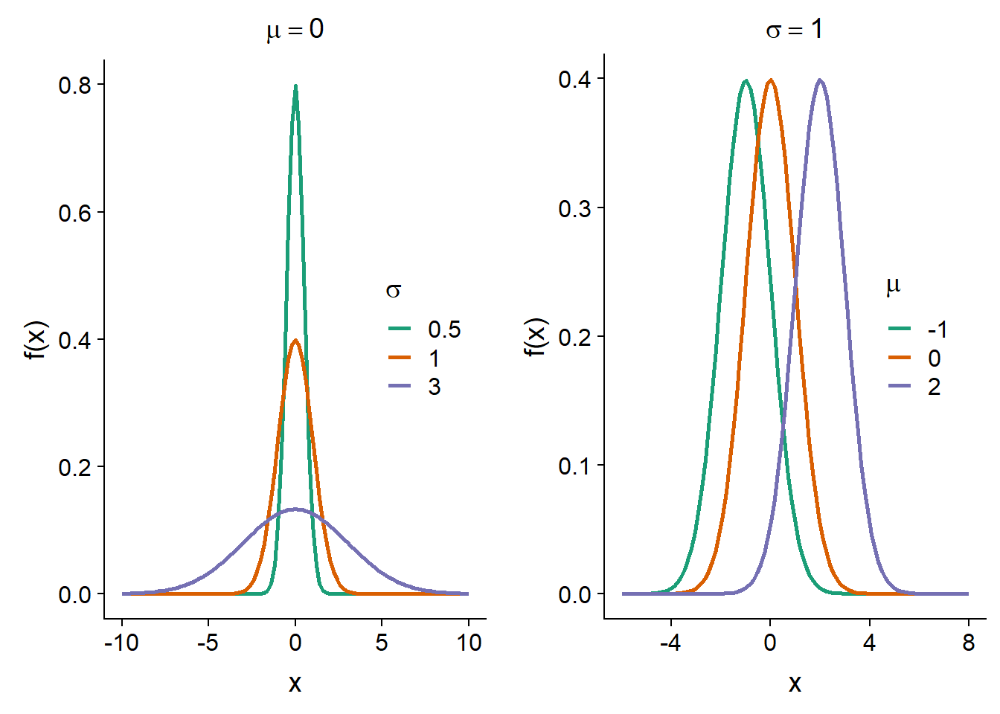
Standard normal distribution
If a variable \(x\) follows a normal distribution with mean \(\mu\) and standard deviation \(\sigma\), we can obtain a standardized version of \(x\) (denoted \(z\)) by subtracting \(\mu\), then dividing by \(\sigma\):
\[z = \frac{x - \mu}{\sigma}\]
In R, the
scale(x)function applied to a vectorxstandardizes it (by subtracting the mean ofxand dividing by the standard deviation).
The variable \(z\) then follows a standard normal distribution, that is, with \(\mu\) = 0 and \(\sigma\) = 1:
\[f(z) = \frac{1}{\sqrt{2 \pi}} e^{-\frac{1}{2} z^2}\]
In other words, any normal distribution can be obtained from \(f(z)\) by moving the center by a distance \(\mu\) and widening the distribution by a factor \(\sigma\).
The values of \(z\) represent the distance from the mean, expressed in standard deviation units, eg: \(z\) = -1.5 means one standard deviation and half below the mean.
Cumulative distribution
We have previously seen that the probability that a continuous random variable is found in a certain interval corresponds to the area under the curve (the integral) of the probability density in this interval.
The cumulative distribution of a random variable is, for each value \(x\), the probability that the value of the variable is less than or equal to \(x\). It is therefore equal to the area under the curve of the probability density on the left of \(x\).
Here is an illustration of the cumulative distribution \(F(z)\) of a standard normal variable \(z\).

From the cumulative distribution \(F(x)\), we can easily calculate the probability in an interval (\(x_1\), \(x_2\)) by subtraction, i.e. \(F(x_2)\) - \(F(x_1)\).
Distribution functions in R
R provides four functions to work with the normal distribution. In each case, the mean (mean) and standard deviation (sd) of the distribution must be specified.
rnorm(n, mean, sd)generatesnrandom values from a normal distribution with a givenmeanand standard deviation (sd).dnorm(x, mean, sd)gives the probability density associated with a valuex.pnorm(q, mean, sd)gives the cumulative probability associated with a valueq.qnorm(p, mean, sd)gives the value (qfor quantile) associated with a given cumulative probabilityp.
Similar functions are defined for other frequently used distributions, as we will see later.
For example, for the standard normal distribution:
- the cumulative probability at 2 standard deviations above the mean is 98%;
pnorm(2, mean = 0, sd = 1)## [1] 0.9772499- the probability of being within one standard deviation on either side of the mean is 68%;
pnorm(1, mean = 0, sd = 1) - pnorm(-1, mean = 0, sd = 1)## [1] 0.6826895- the third quartile (75% cumulative probability) is at 0.67 standard deviation above the mean.
qnorm(0.75, mean = 0, sd = 1)## [1] 0.6744898Quantile-quantile plot
The quantile-quantile plot (or Q-Q plot) is used to visualize the correspondence between two statistical distributions; most often, we want to compare a sample to a given theoretical distribution.
For example, suppose we have 99 observations of a variable and we want to check that its distribution is approximately normal. We sort the observations in ascending order and associate the first observation with the 1st percentile of the standard normal distribution, the second observation with the 2nd percentile, and so on until the 99th percentile. If the sample comes from a normal distribution, the scatter plot produced by this association will form a straight line.
Indeed, if \(x\) follows a normal distribution, then \(x = \mu + \sigma z\) where \(z\) is a standard normal variable.
In R, we can compare a vector to the normal distribution with the qqnorm function and add a straight line to the graph with theqqline function.
test <- rnorm(99, mean = 6, sd = 4)
qqnorm(test)
qqline(test)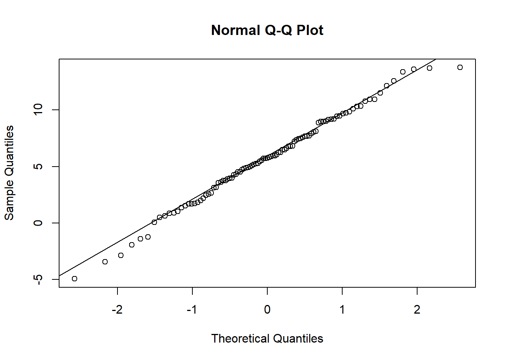
As you can see, for a random sample drawn from a normal distribution, the correspondence is very good; however, there is some variation due to the sampling of a limited number of points.
Now, let’s look at the Q-Q plot of tree diameter in the Kejimkujik dataset, as seen in the last class.
kejim <- read.csv("../donnees/cours1_kejimkujik.csv")
dhp <- kejim$dhp
qqnorm(dhp)
qqline(dhp)
The distribution is clearly not normal. More specifically, we find that:
For the values below the mean (on the left), the points are above the line, so the quantiles of the sample are higher than those of a normal distribution. Being higher, they are closer to the mean.
For values above the mean (on the right), the quantiles of the sample are also higher than those of the normal distribution. But in this case, they would then be farther from the mean.
Thus, the Q-Q plot indicates that the distribution is asymmetrical with quantiles closer together on the left and further away on the right. Since this is a fairly obvious difference, it could be detected more easily with a histogram (below). However, the Q-Q plot can detect more subtle differences, so it is useful to learn how to read and interpret this graph.

Exercise
Here is a quantile-quantile plot comparing a sample to a normal distribution. Describe how this sample differs from the theoretical distribution.
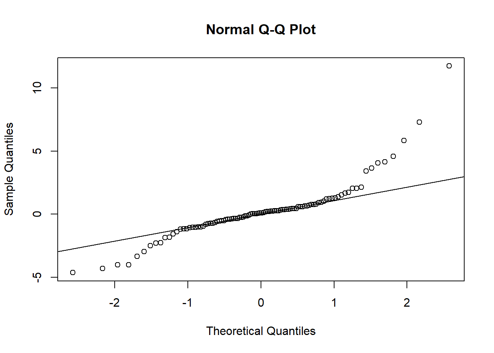
The log-normal distribution
Definition
A variable \(x\) follows a log-normal distribution if \(y = log(x)\) follows a normal distribution.
Equivalently, if \(y\) follows a normal distribution, \(x = e^y\) follows a log-normal distribution.
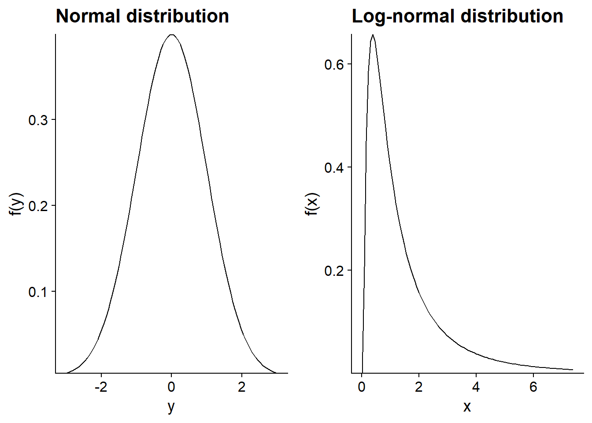
Properties of logarithms
\(log(x)\) is only defined for \(x > 0\);
\(log(x) = 0\) if \(x = 1\). Negative and positive logarithms represent values under and over 1, respectively.
The logarithm transforms products into sums, and ratios into differences.
\[log(xw) = log(x) + log(w)\] \[log(x/v) = log(x) - log(v)\]
Therefore, on a logarithmic scale, the distance between two numbers is proportional to their ratio in the original scale.
Unless we specify otherwise, the logarithms are natural logarithms (base \(e\)). However, a base change only causes a change of scale and does not affect the shape of the distribution. For example, to convert to base 10:
\[log_{10}(x) = \frac{log(x)}{log(10)}\]
Use of the log-normal distribution
If the normal distribution tends to be associated with additive processes (sum of many independent effects), the log-normal distribution is associated with multiplicative processes. For example, if a population increases by 5%, 10% and 3% in three consecutive years, the cumulative increase corresponds to the multiplication: 1.05 x 1.10 x 1.03 = 1.19, or a 19% increase. In a multiplicative process, the larger a variable, the more it can grow, which explains why the resulting distribution is asymmetric and stretched to the right.
Remember that the DBH distribution of all trees in the Kejimkujik dataset had this type of asymmetry. To check if the distribution of DBH is approximately log-normal, see the Q-Q plot for the logarithm of DBH.
qqnorm(log(dhp))
qqline(log(dhp))
A better match is observed than for the untransformed data, except for the smallest DBH values in the sample, which are still higher than predicted by the reference distribution. Do you have a hypothesis for this anomaly near the minimum? (Hint: Which trees are not sampled?)
Logarithmic transformation
In the next few weeks, we will see several statistical methods that all assume that the observed variable is explained by additive effects, with a random component following a normal distribution.
Thus, if the process we are interested in is multiplicative and the measured variable approaches a log-normal distribution, we can model this variable after applying a logarithmic transformation. However, you must be cautious when interpreting the results. In particular, the mean of \(log(x)\) is not equal to the logarithm of the mean of \(x\), as this graph shows.
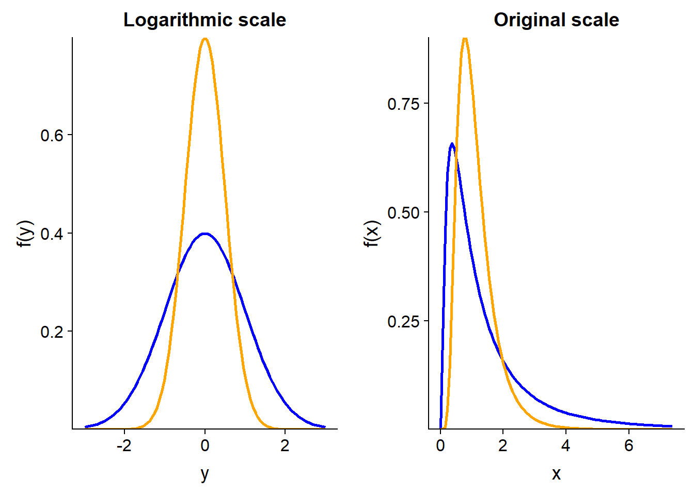
In the graph above, the two distributions of \(y = log(x)\) have the same mode (peak of the distribution), the same median and the same mean at 0. However, on the original scale, the mean of \(x\) is higher for the blue distribution, while its mode is smaller; both distributions have the same median value (equal to 1).
Exercise
Among the following variables, which ones do you think would most likely follow a normal distribution, and why?
The mean temperature in September (varying across years) in Rouyn-Noranda.
The population of cities and towns in Québec.
The number of followers of a social media account (e.g. Twitter).
Weekly bread sales at a supermarket.
Summary
A discrete distribution is represented by a probability mass function; a continuous distribution is represented by a probability density function.
The cumulative distribution of a variable at a point \(x\) gives the probability that this variable is less than or equal to \(x\).
Examples of continuous distributions: uniform, normal, log-normal. (We will see more examples of discrete distributions later in the session.)
The normal distribution is characterized by its mean \(\mu\) and its standard deviation \(\sigma\).
Any normal distribution can be reduced to the standard normal distribution (\(\mu\) = 0, \(\sigma\) = 1) with the linear transformation: \(z = (x - \mu) / \sigma\).
A logarithmic transformation converts multiplicative effects into additive effects, and log-normal distributions into normal distributions.
The quantile-quantile plot provides a visual way to compare data to a reference distribution.
Confidence interval
Estimator with a normal distribution
If a sample is drawn from a distribution with mean \(\mu\) and standard deviation \(\sigma\), we have seen that the sample mean \(\bar{x}\) has a mean of \(\mu\) and a standard deviation equal to \(\sigma / \sqrt{n}\).
Suppose that \(\bar{x}\) follows a normal distribution. This is always the case when \(x\) itself is normally distributed. But thanks to the central limit theorem, it is also a good approximation for other distributions of \(x\), as long as the sample is large enough.
In this case, the variable \(z\) that we will define as:
\[ z = \frac{\bar{x} - \mu}{\sigma / \sqrt{n}} \]
follows a standard normal distribution. We can therefore use that theoretical distribution to determine the probability that \(\bar{x}\) is found in a given interval.
Interval with a given probability
Alternatively, we can determine the interval of \(\bar{x}\) corresponding to a given probability around the mean.
For example, the interval between the first quartile (cumulative probability of 25%) and the third quartile (cumulative probability of 75%) corresponds to a probability of 50%. These quantiles can be determined in R with qnorm.
c(qnorm(0.25), qnorm(0.75))## [1] -0.6744898 0.6744898Note: By default, qnorm uses the parameters mean = 0 and sd = 1.
The interval is symmetrical around the mean (0) since the normal distribution is symmetrical and our chosen quantiles are equally distant from 50%.
Let’s convert this interval of \(z\) to an interval of \(\bar{x}\):
\[\left( -0.674 \le \frac{\bar{x} - \mu}{\sigma / \sqrt{n}} \le 0.674 \right)\]
\[\left( - 0.674 \frac{\sigma}{\sqrt{n}} \le \bar{x} - \mu \le 0.674 \frac{\sigma}{\sqrt{n}} \right)\]
There is a 50% probability that the sample mean \(\bar{x}\) is in a range of 0.674 standard errors on each side of the parameter \(\mu\).
Suppose we represent the value of \(z\) corresponding to a cumulative probability \(p\) as \(z_p\). For example, \(z_{0.25}\) is the first quartile. Thus, we rewrite the interval above as:
\[\left( z_{0.25} \frac{\sigma}{\sqrt{n}} \le \bar{x} - \mu \le z_{0.75} \frac{\sigma}{\sqrt{n}} \right)\]
For a 90% probability interval, we would replace \(z_{0.25}\) and \(z_{0.75}\) with \(z_{0.05}\) and \(z_{0.95}\). Indeed, a 90% interval excludes 10% of the distribution and since we want a centered interval, we exclude 5% of both ends of the distribution, as indicated by the red part of the distribution in the graph below.
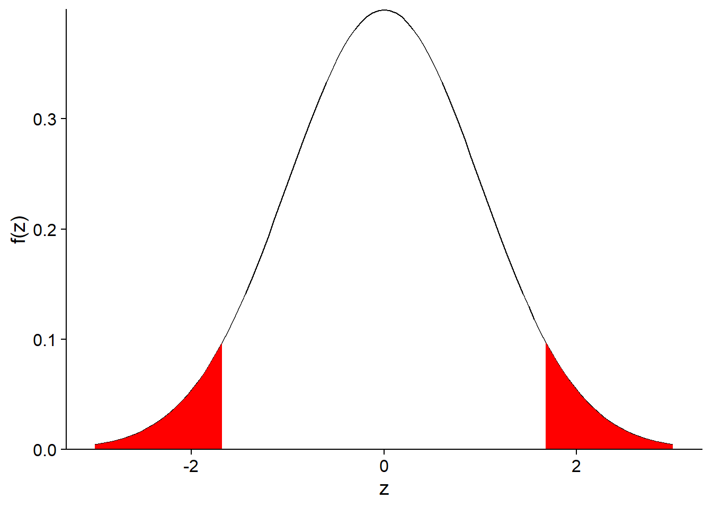
More generally, if we represent the probability outside the interval as \(\alpha\), an interval containing (100% - \(\alpha\)) of the distribution of \(\bar{x}\) is given by:
\[\left( z_{\alpha/2} \frac{\sigma}{\sqrt{n}} \le \bar{x} - \mu \le z_{1-\alpha/2} \frac{\sigma}{\sqrt{n}} \right)\]
For historical reasons, the 95% interval corresponding to \(\alpha\) = 0.05 is used most often:
\[\left( z_{0.025} \frac{\sigma}{\sqrt{n}} \le \bar{x} - \mu \le z_{0.975} \frac{\sigma}{\sqrt{n}} \right)\]
By replacing the quantiles by their values, we obtain:
\[\left(- 1.96 \frac{\sigma}{\sqrt{n}} \le \bar{x} - \mu \le 1.96 \frac{\sigma}{\sqrt{n}} \right)\]
Confidence interval
To summarize, if we sample a variable \(x\) and calculate its sample mean \(\bar{x}\), we can say, for example, that we have a 95% probability of getting an estimate \(\bar{x}\) that is \(\pm\) 1.96 standard errors around the parameter \(\mu\), which is unknown.
This always assumes our model is good, that is, the \(\bar{x}\) statistic is well represented by a normal distribution.
So, after calculating \(\bar{x}\) and calculating its standard error, we establish an interval of 1.96 standard errors on each side of \(\bar{x}\):
\[\left(\bar{x} - 1.96 \frac{\sigma}{\sqrt{n}}, \bar{x} + 1.96 \frac{\sigma}{\sqrt{n}} \right)\]
According to our model, we can say that for 95% of the possible samples of \(x\), the interval thus calculated will contain the value of \(\mu\). This is a 95% confidence interval for \(\bar{x}\).
Interpretation of the confidence interval
The probability associated with a confidence interval is based on the variability of \(\bar{x}\) from one sample to another. It constitutes a probability a priori (before having sampled).
The parameter \(\mu\) is fixed. Once the estimated \(\bar{x}\) is obtained for a given sample, the confidence interval either contains \(\mu\) or does not contain it.
Since a parameter is not a random variable, it does not have a statistical distribution. It is therefore inaccurate to say, after we obtain a confidence interval for a given sample, that “the parameter \(\mu\) has 95% probability of being within this interval”.
Confidence interval of a mean
We have seen that the (100% - \(\alpha\)) confidence interval of the mean \(\bar{x}\) is given by:
\[\left( \bar{x} + z_{\alpha/2} \frac{\sigma}{\sqrt{n}}, \bar{x} + z_{1 - \alpha/2} \frac{\sigma}{\sqrt{n}} \right)\]
The only problem with this equation is that we do not know the parameter \(\sigma\). And if we replace \(\sigma\) with its estimator \(s\), the probability associated with the interval becomes less than (100% - \(\alpha\)). In practice, we need to widen the interval to take into account our imperfect knowledge of the standard deviation of the data.
The solution to this problem was discovered by William Gosset, who published it under the pseudonym Student. When using an estimate of the standard deviation, the confidence interval is no longer based on the standard normal distribution \(z\), but on the Student \(t\) distribution.
The \(t\) distribution has a parameter, the number of degrees of freedom, which in this case corresponds to \(n\) - 1. Thus, the corrected version of the (100% - \(\alpha\)) confidence interval for \(\bar{x}\) is:
\[\left( \bar{x} + t_{(n-1)\alpha/2} \frac{s}{\sqrt{n}}, \bar{x} + t_{(n-1)1 - \alpha/2} \frac{s}{\sqrt{n}} \right)\]
where the \(n-1\) in parentheses indicates the number of degrees of freedom of the \(t\) distribution.
The t Distribution
The graph below compares the standard normal distribution (\(z\)) with \(t\) distributions having 4 and 9 degrees of freedom. The smaller the number of degrees of freedom, the further the \(t\) distribution is from the normal. In particular, the standard deviation increases and values far from the mean have a higher probability, which explains why the confidence interval constructed from the \(t\) distribution is wider.
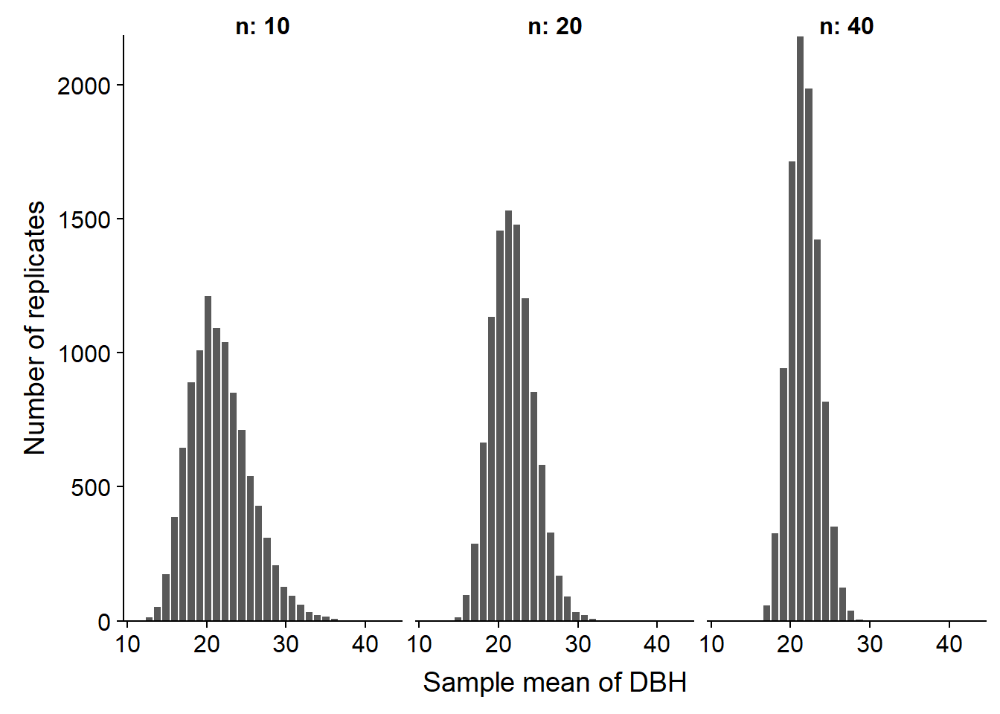
While this is difficult to tell from the graph, the \(t\) distribution also has a different shape. Even when compared with a normal distribution with the same standard deviation, the \(t\) distribution puts a greater probability on extreme values (very far from the mean).
When the number of degrees of freedom is high, such as when we compute the mean of a large sample, the \(t\) distribution approaches the standard normal distribution.
Summary
A confidence interval is defined around an estimate so that across all the possible samples, there is a specific probability that the confidence interval obtained contains the value of the parameter to be estimated.
Due to the central limit theorem, the difference between the sample mean and the population mean often follows an approximately normal distribution.
Student’s \(t\) distribution replaces the standard normal distribution when estimating the confidence interval for the sample mean, when the population standard deviation is unknown. That distribution has more frequent extreme values, especially with a low number of degrees of freedom.
Reference
The website Seeing Theory presents several statistical concepts in a visual and interactive way. For example, chapters 3 (Probability Distributions) and 4 (Frequentist Inference) relate to the concepts seen in this class.